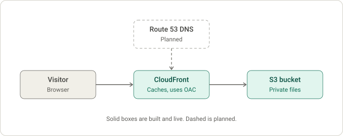

Secure Static Website on AWS
A secure, fast website that can be rebuilt from code if something goes wrong. The S3 bucket is private and only CloudFront can read it, CloudFront caches pages for speed, and Terraform defines everything so it can be recreated the same way every time.
